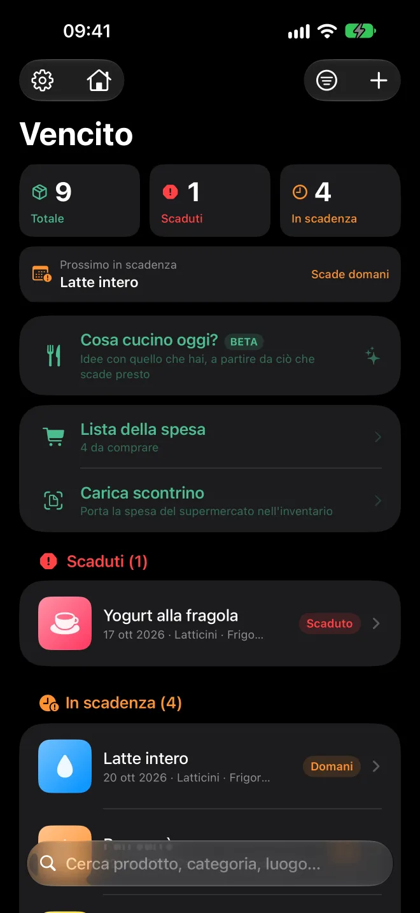
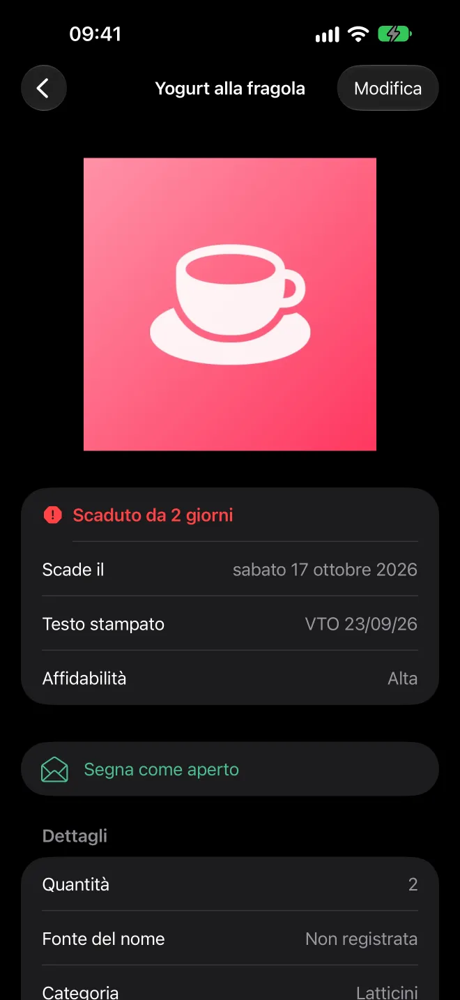
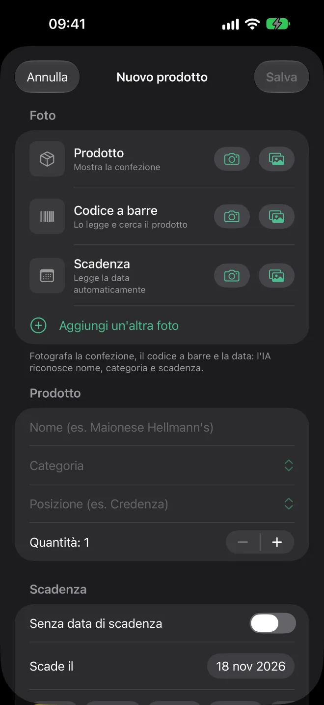
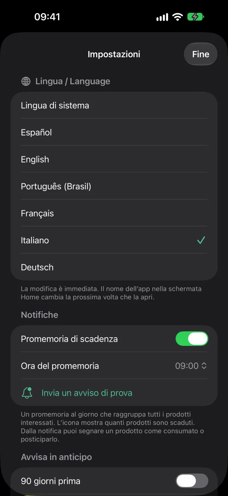
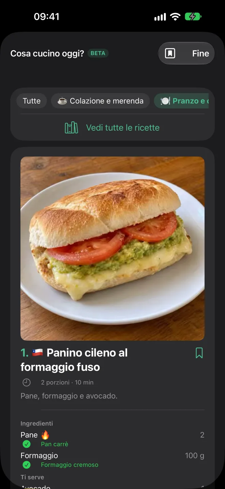
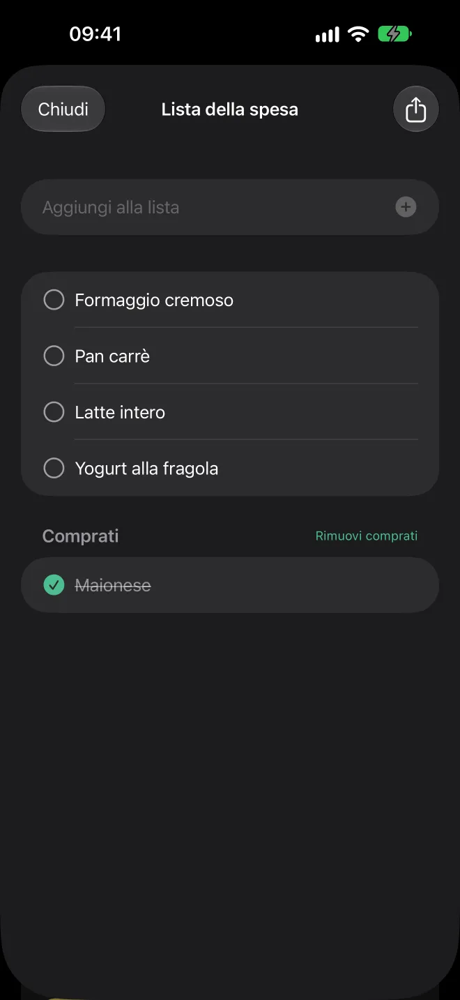
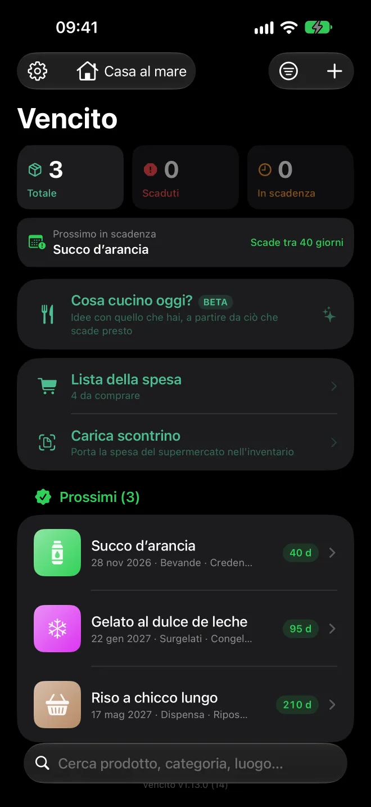
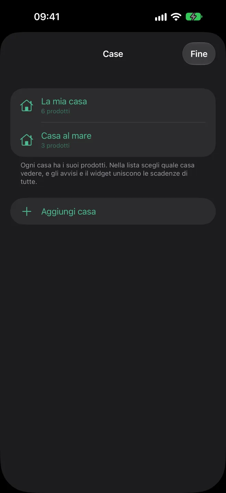
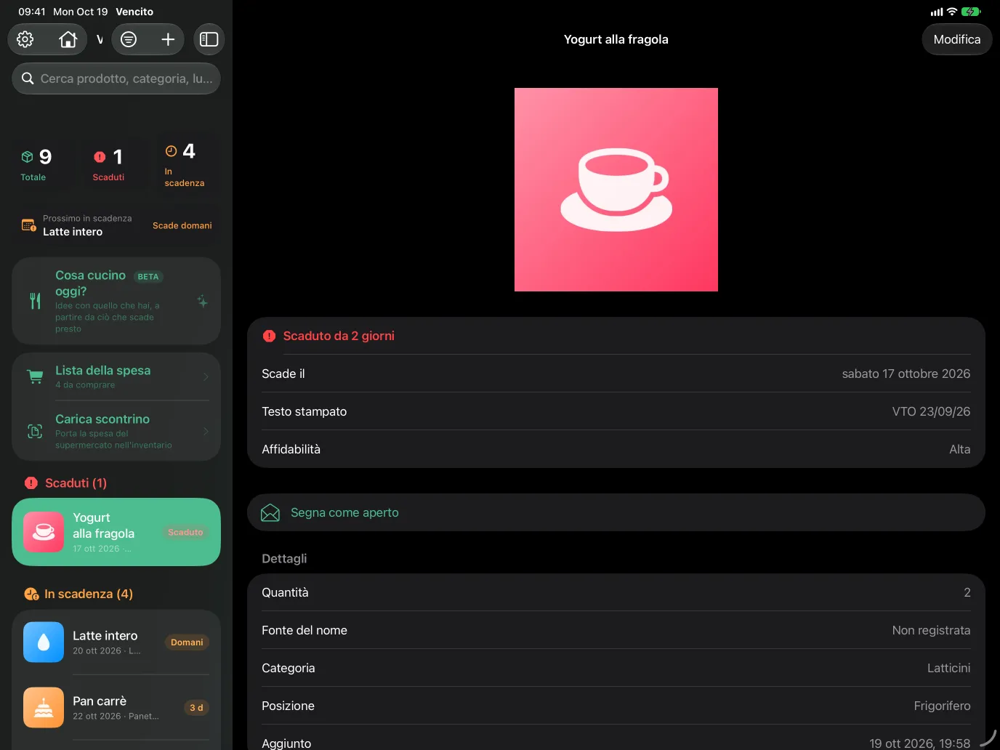

App per iPhone, iPad e Android
Niente va sprecato nella tua dispensa.
Fai una foto alla confezione e Vencito legge la data di scadenza. Ti avvisa prima che scada e ti mostra cosa usare per primo.
Presto sull'App Store e su Google Play · Gratis · iOS e iPadOS 17 o successivi · Android 8 o successivi

Come funziona
Dallo scaffale del negozio al tuo frigo, in tre passi
Scatta una foto
Della confezione, con la data in vista. Oppure inquadra dal vivo: legge il codice a barre e la data insieme. Puoi aggiungere altre foto: prodotto, codice a barre e data di scadenza.
Vencito completa il resto
Legge la data, propone nome e categoria e cerca il codice a barre in Open Food Facts e nelle sue basi di cosmetici e altri prodotti. Controlli e salvi.
Ricevi l'avviso in tempo
Una notifica al giorno, all'ora che scegli, con ciò che sta per scadere: di default 30, 15, 7, 3 e 1 giorno prima.
Provalo qui
Scrivi cosa dice la confezione
È una versione semplificata del lettore di date dell'app. Capisce i formati stampati sulle confezioni e preferisce la data di scadenza a quella di produzione.
Data di scadenza
—
—Funzioni
Pensato per la dispensa, il frigo e l'armadietto dei medicinali
Lettore di date
EXP 14/02/27, 25-08-2026, 25 AGO 2026, 08/2027, SCAD 04/27… Distingue scadenza e produzione e legge confezioni in sei lingue.
Codici a barre
Scansione dal vivo o dalla foto, con EAN, UPC e QR. Open Food Facts (e le sue basi di cosmetici e altri prodotti, come i farmaci senza ricetta) compila nome, marca e categoria.
Cosa cucino oggi?
Ricette con ciò che hai, partendo da ciò che scade presto. Un catalogo proprio di oltre 1.000 piatti comuni e facili di vari paesi, con foto e nella tua lingua, per colazione, merenda, pranzo e cena, con modalità cucina e ricette salvate. Funziona senza internet.
Più case
Tieni i prodotti di più di una casa e scegli quale vedere, oppure vedile tutte insieme. Gli avvisi e il widget riuniscono le scadenze di tutte le case.
Lista della spesa
Annota cosa devi comprare, aggiungi con un tocco ciò che manca a una ricetta o lascia che aggiunga ciò che finisce. Spunta ciò che hai comprato e condividi la lista come testo.
Tanti di fila
Scansione continua: codice a barre, data, fatto. Se una data non viene letta con sicurezza, l'app ti chiede di confermarla prima di salvare.
Aggiunta rapida
Oltre cento prodotti comuni con foto, per aggiungere ciò che hai comprato con un tocco: latte, uova, pane, frutta… Propone per primi quelli che usi di più e stima la scadenza di ogni prodotto.
Statistiche
Quanto hai consumato, quale quota in tempo, cosa hai buttato e cosa hai salvato all'ultimo, con la tua serie senza sprechi, un grafico di sei mesi e il confronto con il periodo precedente. «Butta» registra ciò che si è rovinato; «Elimina» corregge un errore di inserimento.
Consuma con lo scanner
Inquadra il codice a barre o il QR del prodotto usato e viene scalata un'unità di quello che scade prima. Passa al successivo senza toccare lo schermo.
Carica lo scontrino della spesa
Da una foto (fotocamera o galleria) o un PDF: legge le righe, ignora tasse e pagamenti, stima la scadenza di ogni prodotto e, se lo scontrino riporta il codice a barre, cerca il nome reale.
Cucina con ChatGPT
In una ricetta, condividi foto e istruzioni con un tocco: scegli ChatGPT, invia, attiva la modalità vocale e ti guida passo passo, con le porzioni scelte.
Senza data di scadenza
Per ciò che non scade o non ha data: salvato a parte, senza avvisi.
Scansione dal vivo
In un solo fotogramma legge il codice a barre, la data di scadenza e il nome del prodotto. Ogni valore viene confermato solo quando si ripete, per evitare letture sfocate.
Più foto per prodotto
Conserva una foto del prodotto, una del codice a barre, una della data di scadenza e quante ne vuoi. Compaiono in una galleria da scorrere.
Widget
Nella schermata Home e nella schermata di blocco, con ciò che scade dopo. Tocca un prodotto per aprirlo nell'app.
Lo stato a colpo d'occhio
Scaduti, in scadenza e prossimi, con un riepilogo in alto e una miniatura per ogni prodotto.
Scorri per consumare
Scorri per usare un'unità o rimuovere il prodotto. Se sbagli, su iPhone scuoti per annullare e su Android tocca «Annulla».
iPad e tablet
Elenco e dettaglio affiancati, in qualsiasi orientamento; su iPad anche con multitasking e, con la tastiera, ⌘N aggiunge un prodotto. Sui tablet Android, la stessa vista a due pannelli.
Sei lingue
Spagnolo, inglese, portoghese (Brasile), francese, italiano e tedesco. Cambi al volo in Impostazioni.
Accessibile
Funziona con VoiceOver e con testi grandi. Ogni prodotto viene letto per intero: nome, stato e data.
Video
Vencito in 30 secondi
Tutto a colpo d'occhio, scansione dal vivo del codice a barre e della data, e ricette con ciò che hai.
Il video è in inglese. La scansione mostrata è una simulazione illustrativa.
Ricette
Uno sguardo al catalogo
Oltre 1.000 piatti comuni e facili di vari paesi, ognuno con la sua foto. Eccone alcuni.

Cotoletta alla napoletana
🇦🇷 · 40 min

Empanadas di carne al forno
🇦🇷 · 55 min

Chivito
🇺🇾 · 25 min

Chilaquiles rossi
🇲🇽 · 25 min

Lomo saltado
🇵🇪 · 25 min

Pabellón criollo
🇻🇪 · 50 min

Arepas al formaggio
🇨🇴 · 25 min

Pastel de choclo
🇨🇱 · 60 min

Tortilla di patate
🇪🇸 · 35 min

Oyakodon
🇯🇵 · 25 min

Souvlaki di pollo
🇬🇷 · 30 min

Chana masala
🇮🇳 · 30 min

Ropa vieja
🇨🇺 · 60 min

Sopa paraguaya
🇵🇾 · 50 min

Maccheroni al formaggio in pentola
🇺🇸 · 30 min

Pancake soffici
🇺🇸 · 20 min
Le ricette vengono suggerite in base a ciò che hai e a ciò che scade prima.
Schermate
Uno sguardo da vicino








Su iPad, elenco e dettaglio sono affiancati.
Privacy
I tuoi dati restano sul tuo telefono
Vencito non ha account, né server propri, né analisi, né pubblicità.
Tutto sul dispositivo
I prodotti, le foto e le impostazioni sono salvati sul tuo iPhone, iPad o telefono Android. Sui dispositivi Apple, se attivi la sincronizzazione con iCloud, anche nel tuo iCloud privato (lo sviluppatore non vi ha accesso).
Letto sul dispositivo
Il testo delle foto e i codici a barre vengono letti sul dispositivo: con il riconoscimento di Apple su iPhone e iPad, e con ML Kit di Google su Android.
Esce un solo dato facoltativo
Per cercare un prodotto, solo il numero del codice a barre viene inviato a Open Food Facts e alle sue basi sorelle. Puoi disattivarlo.
Avvisi locali
Le notifiche le programma il telefono stesso. Non passano per nessun server.
FAQ
Domande frequenti
Quanto costa?
È gratis, senza nulla di bloccato.
Funziona senza internet?
Sì. Solo la ricerca del prodotto tramite codice a barre richiede internet.
Funziona su Android e sui tablet?
Sì. Ci sono versioni per iPhone, iPad e Android, tablet compresi, con le stesse sei lingue. I dati non si sincronizzano tra un iPhone e un Android: si trasferiscono esportando e importando un file dalle Impostazioni.
Posso portare i miei dati su un altro telefono?
Sì. In Impostazioni esporti un file con tutti i tuoi prodotti (con o senza foto) e lo importi su un altro dispositivo.
E se la data riporta solo mese e anno?
L'app usa l'ultimo giorno di quel mese, che è il modo in cui si leggono le confezioni. Capisce sia 08/2027 che SCAD 04/27.
Posso conservare più di una foto per prodotto?
Sì. Oltre alla foto principale puoi aggiungerne una del codice a barre, una della data di scadenza e fino a 8 in più. Scorrile nella schermata di dettaglio; sono incluse nell'esportazione.
Un'altra domanda o un problema? Contatta l'assistenza.